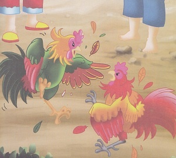

Cindelaras
( Cerita Rakyat dari Jawa Timur )
Raden Putra adalah raja Kerajaan Jenggala. Ia didampingi seorang permaisuri yang baik hati dan seorang selir yang cantik jelita. Tetapi, selir Raja Raden Putra memiliki sifat iri dan dengki terhadap sang permaisuri. Ia merencanakan suatu yang buruk kepada permaisuri.
Selir baginda, berkomplot dengan seorang tabib istana. Ia berpura-pura sakit parah. Tabib istana segera dipanggil. Sang tabib mengatakan bahwa ada seseorang yang telah menaruh racun dalam minuman tuan putri.
“Orang itu tak lain adalah permaisuri Baginda sendiri,” kata sang tabib. Baginda menjadi murka mendengar penjelasan tabib istana. Ia segera memerintahkan patihnya untuk membuang permaisuri ke hutan. Sang patih segera membawa permaisuri yang sedang mengandung itu ke hutan belantara. Tapi, patih yang bijak itu tidak mau membunuhnya. Rupanya sang patih sudah mengetahui niat jahat selir baginda.
Setelah beberapa bulan berada di hutan, lahirlah anak sang permaisuri. Bayi itu diberinya nama Cindelaras. Cindelaras tumbuh menjadi seorang anak yang cerdas dan tampan. Sejak kecil ia sudah berteman dengan binatang penghuni hutan. Suatu hari, ketika sedang asyik bermain, Cindelaras menemukan sebuah telur.
Setelah 3 minggu, telur itu menetas. Cindelaras memelihara anak ayamnya dengan rajin. Anak ayam itu tumbuh menjadi seekor ayam jantan yang bagus dan kuat.
Tapi ada satu keanehan. Bunyi kokok ayam jantan itu sungguh menakjubkan! “Kukuruyuk… Tuanku Cindelaras, rumahnya di tengah rimba, atapnya daun kelapa, ayahnya Raden Putra…” Cindelaras sangat takjub mendengar kokok ayamnya dan segera memperlihatkan pada ibunya.
Lalu, ibu Cindelaras menceritakan asal usul mengapa mereka sampai berada di hutan. Mendengar cerita ibundanya, Cindelaras bertekad untuk ke istana dan membeberkan kejahatan selir baginda. Setelah di ijinkan ibundanya, Cindelaras pergi ke istana ditemani oleh ayam jantannya.
Ketika dalam perjalanan ada beberapa orang yang sedang menyabung ayam. Cindelaras kemudian dipanggil oleh para penyabung ayam.
“Ayo, kalau berani, adulah ayam jantanmu dengan ayamku,” tantangnya.
“Baiklah,” jawab Cindelaras.
Ketika diadu, ternyata ayam jantan Cindelaras bertarung dengan perkasa dan dalam waktu singkat, ia dapat mengalahkan lawannya. Setelah beberapa kali diadu, ayam Cindelaras tidak terkalahkan. Ayamnya benar-benar tangguh.
Berita tentang kehebatan ayam Cindelaras tersebar dengan cepat. Raden Putra pun mendengar berita itu. Kemudian, Raden Putra menyuruh hulubalangnya untuk mengundang Cindelaras.
“Hamba menghadap paduka,” kata Cindelaras dengan santun.
“Anak ini tampan dan cerdas, sepertinya ia bukan keturunan rakyat jelata,” pikir baginda.
Ayam Cindelaras diadu dengan ayam Raden Putra dengan satu syarat, jika ayam Cindelaras kalah maka ia bersedia kepalanya dipancung, tetapi jika ayamnya menang maka setengah kekayaan Raden Putra menjadi milik Cindelaras.
Dua ekor ayam itu bertarung dengan gagah berani. Tetapi dalam waktu singkat, ayam Cindelaras berhasil menaklukkan ayam sang Raja. “Baiklah aku mengaku kalah. Aku akan menepati janjiku. Tapi, siapakah kau sebenarnya, anak muda?” Tanya Baginda Raden Putra. 
Cindelaras segera membungkuk seperti membisikkan sesuatu pada ayamnya. Tidak berapa lama ayamnya segera berbunyi. “Kukuruyuk… Tuanku Cindelaras, rumahnya di tengah rimba, atapnya daun kelapa, ayahnya Raden Putra…,” ayam jantan itu berkokok berulang-ulang. Raden Putra terperanjat mendengar kokok ayam Cindelaras.
Bersamaan dengan itu, sang patih segera menghadap dan menceritakan semua peristiwa yang sebenarnya telah terjadi pada permaisuri. Kemudian, selir Raden Putra pun di buang ke hutan. Raden Putra segera memeluk anaknya dan meminta maaf atas kesalahannya Setelah itu, Raden Putra dan hulubalang segera menjemput permaisuri ke hutan.. Akhirnya Raden Putra, permaisuri dan Cindelaras dapat berkumpul kembali. Setelah Raden Putra meninggal dunia, Cindelaras menggantikan kedudukan ayahnya. Ia memerintah negerinya dengan adil dan bijaksana.